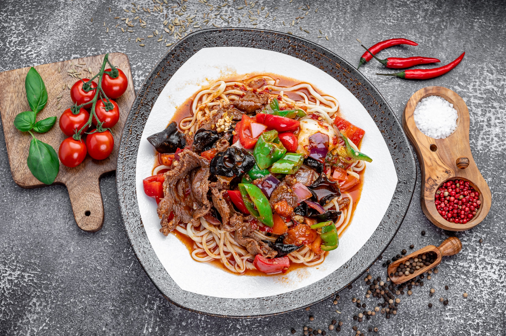
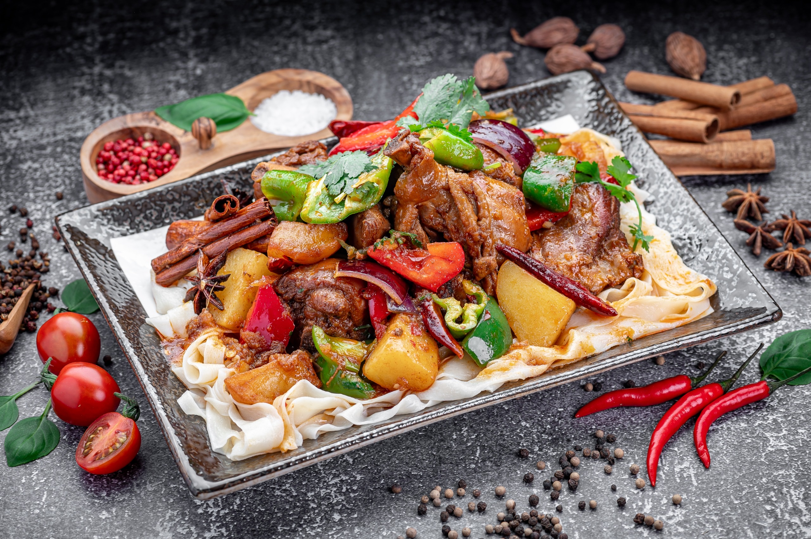
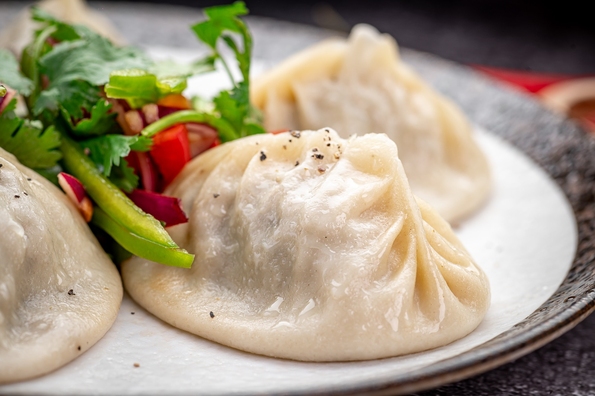
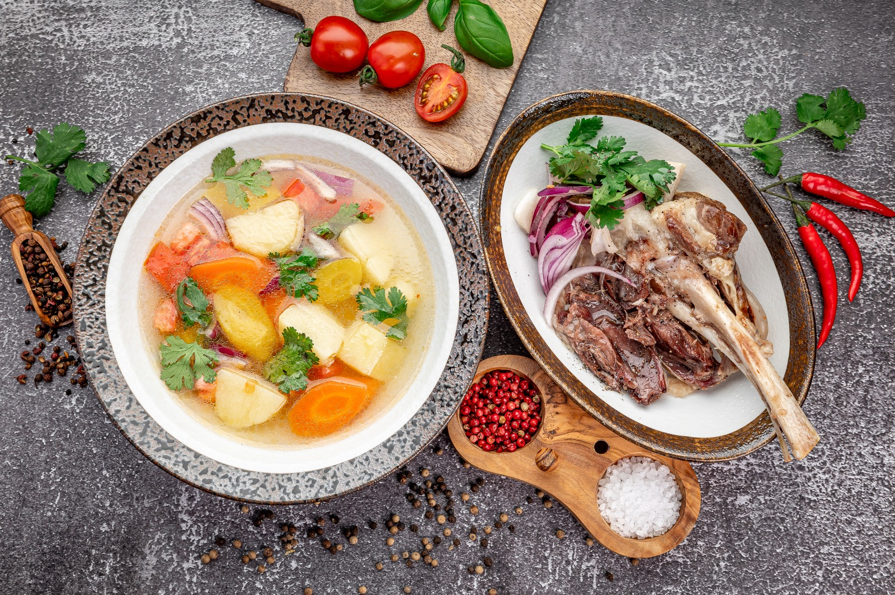
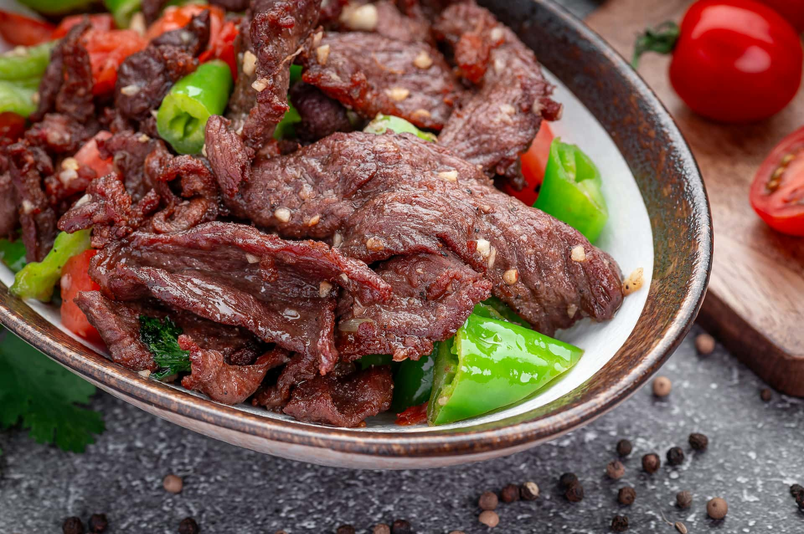
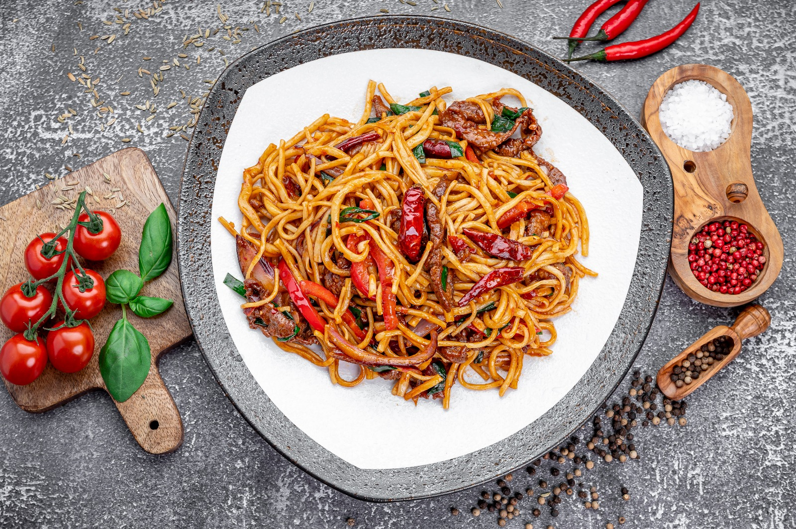
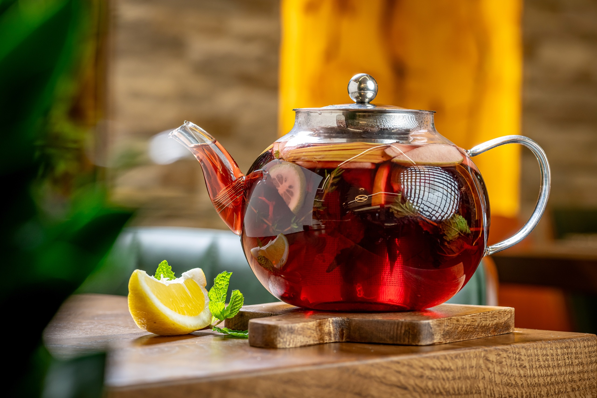

The menu
One dough. A whole table.
Hand-pulled laghman noodles are the heart of the kitchen — pulled to order, never ahead. Around them: steamed manty, crackling samsa, slow soups and wok-fired mains from the Central Asian table. Everything is halal.
Order pickup ☪ 100% halalLive prices and today's availability are on the order page — each kitchen cooks its own menu from its own register.

Laghman Noodles
The signature. Dough is pulled, folded and slapped against the table, then goes straight to the wok or the broth. Chewy, glossy, alive — the noodle you hear before you taste.
- Guyurou Laghman
- Dry-Fried Laghman
- Chezyru Laghman
- Boso Laghman
- Vegetable Laghman

Big Plate Chicken — Dapanji
A mountain of a dish: chicken braised with potatoes and peppers in a deep, warming sauce, served over wide hand-pulled noodles. Made to be shared — or heroically not.
- Dapanji Large — feeds 3–4
- Dapanji Medium
- Spicy 辣

Manty, Dumplings & Wontons
Hand-pleated and steamed to order: juicy beef manty, delicate wontons in broth, pan-seared dumplings. The quiet masters of the menu.
- Steamed Manty
- Wontons in Broth
- Fried Dumplings

Soups
Slow broths that taste like someone's home: laghman soup with pulled noodles, shurpa with tender lamb, and the soup of the day from the pot that's been working since morning.
- Laghman Soup
- Shurpa
- Soup of the Day

Mains & Hot Appetizers
Wok fire and cumin smoke: lamb seared with peppers, kuurdak with fried potatoes, beshbarmak, crackling samsa and golden fried chicken — the loud side of the kitchen.
- Cumin Lamb
- Kuurdak
- Beshbarmak
- Samsa

Salads & Cold Appetizers
The bright counterpoint: chilled spicy noodles, smashed cucumbers, funchoza, pickled vegetables — everything the hot dishes are better next to.
- Cold Spicy Noodles
- Funchoza
- Smashed Cucumber Salad

Sushi, Desserts & Teas
Coney Island Ave and Emmons Ave add a full sushi bar — fresh rolls, sashimi and sets — plus house desserts, milkshakes and signature teas brewed in glass pots with citrus and spice.
- Sushi & Rolls
- Medovik & Desserts
- Signature Teas
SUSHI BAR: CONEY ISLAND AVE · EMMONS AVE
Hungry already?
Pick your kitchen and see today's full menu with live prices — straight from the register. Pay online, pick up at the counter.
Order pickup